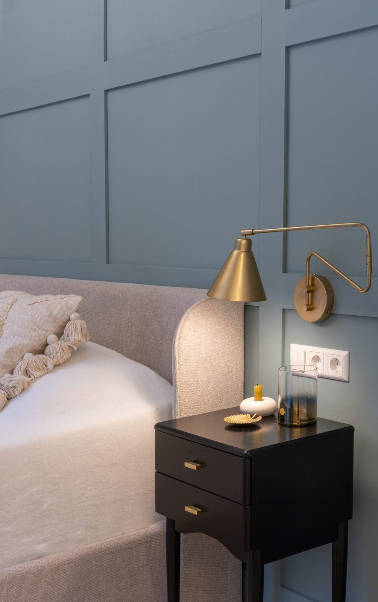
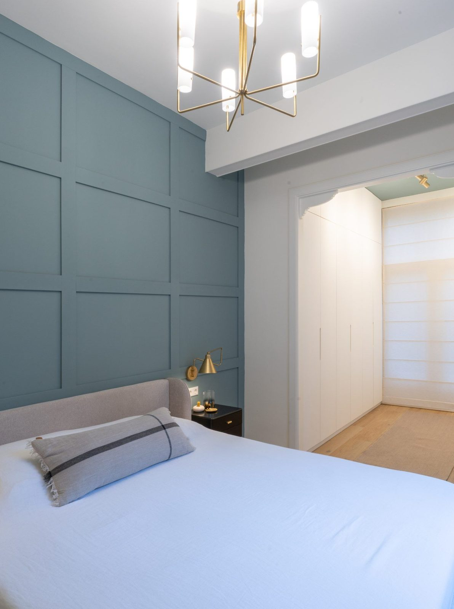
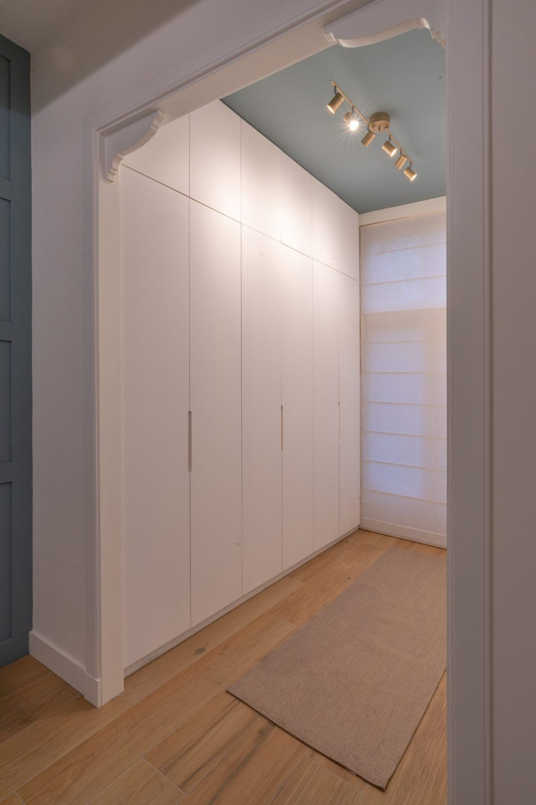
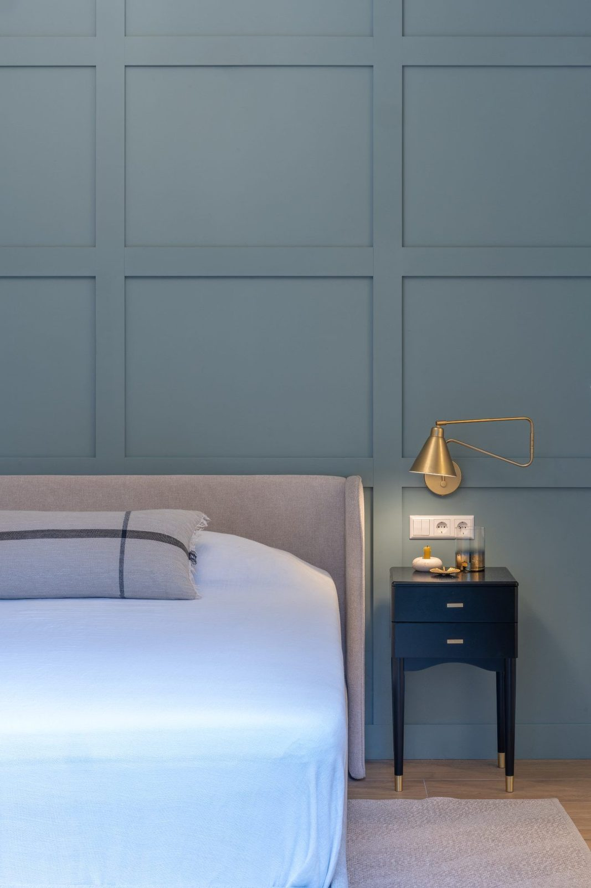
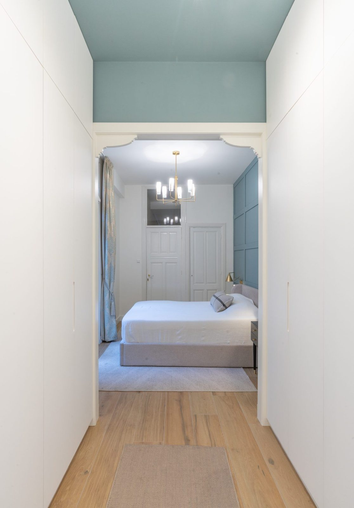

Renovations · The Hague


The brief was to rethink the existing layout and create a more comfortable, functional and harmonious home, with particular attention to the bedroom.
The bedroom felt small and cramped, while an adjoining room, accessed through a narrow entrance, was being used mainly for storage and clothes. The opportunity was to bring these two spaces together, creating a more generous bedroom with ample storage and a stronger connection to the garden.
The family also needed a practical interior that could accommodate everyday life with children and pets, without compromising on warmth, comfort or a considered aesthetic.
By opening up the wall between the bedroom and the adjoining room, I created one larger and more cohesive space. The new layout allowed for bespoke floor-to-ceiling wardrobes, maximising storage while keeping the overall appearance clean and uncluttered.
The opening between the spaces was shaped into an arch, with the architectural details at the corners carefully echoed from the living room. This subtle repetition helps establish a visual connection between the different areas of the home.
With its generous ceiling height, the bedroom had the potential to feel somewhat cold. To bring warmth, depth and character into the space, I designed a bespoke panelled wall behind the bed. Painted in a soft, calming blue, it creates a beautiful backdrop and adds a sense of intimacy to the room. The same blue was carried through to the walk-in closet ceiling, creating a subtle sense of continuity.
Brass details in the bedside lighting introduce a refined contrast and a touch of understated elegance. A generous rug beneath the bed and carefully selected window treatments add further layers of softness, warmth and comfort.
Opening up the bedroom also transformed its relationship with the garden. With two full-height doors, natural light now flows more freely into the room, creating a brighter and more open atmosphere while strengthening the connection between indoors and outdoors.



The material choices were guided by the balance between beauty, comfort and everyday practicality.
The existing flooring was replaced with a durable ceramic floor with a wood-inspired finish. This brings the warmth of a natural wood appearance while offering the resilience and easy maintenance needed for a busy family home with children and pets.
Soft blue tones, bespoke wall panelling and warm brass accents bring depth and character, while the rug and window treatments introduce texture and a softer, more layered feel.
Every element was considered to create a bedroom that feels calm and welcoming, with a balance of practical solutions and timeless details. The result is a more spacious and light-filled retreat, thoughtfully designed around the way the family lives.